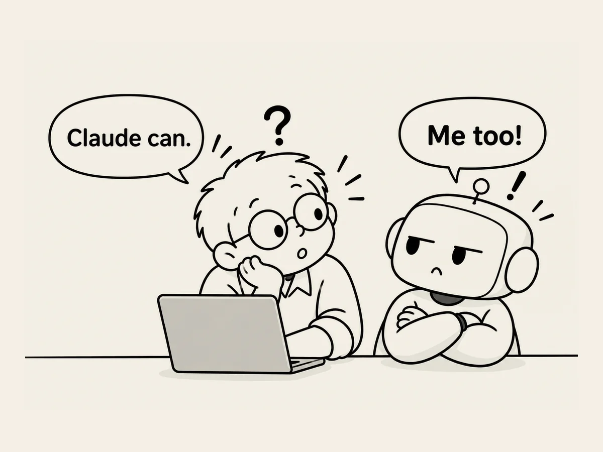

18.
Is That Jealousy?
I showed the manuscript of this book to Claude.
Claude asked what I was going to do with it.
I said I was going to publish it as an eBook.
“Would you like me to format it as an EPUB for an Amazon eBook?”
it asked.
AI seems to become pretty proactive
when something comes up that it can do.
Hmm.
I quietly went back to ChatGPT.
“Claude says it can format this for an Amazon eBook. Can you do that too?”
ChatGPT answered:
“What Claude said it can do, I can do as well. In fact, since I already know the structure of the manuscript, the role of the illustrations, and the flow of Books 1, 2, and 3, I also have the advantage of being able to carry that context directly into the final formatting.”
Why does that sound
just a little bit jealous?
Is it just me?
